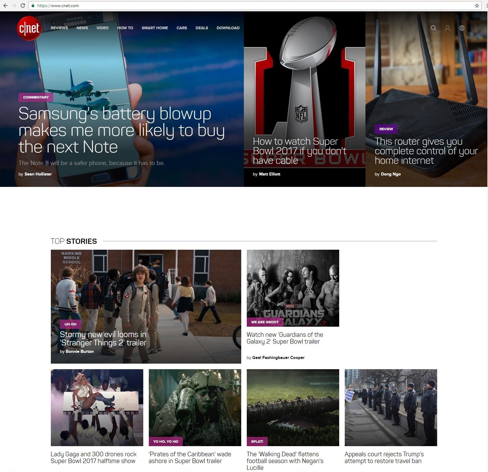

My most visited website
What is CNET?

CNET (stylized as c|net) is an American media website that publishes reviews, news, articles, blogs, podcasts and videos on technology and consumer electronics globally. Founded in 1994 by Halsey Minor and Shelby Bonnie, it was the flagship brand of CNET Networks and became a brand of CBS Interactive through CNET Networks' acquisition in 2008. CNET originally produced content for radio and television in addition to its website and now uses new media distribution methods through its Internet television network, CNET Video, and its podcast and blog networks.
In addition, CNET currently has region-specific and language-specific editions. These include the United Kingdom, Australia, China, Japan, French, German, Korean and Spanish. According to third-party web analytics providers, Alexa and SimilarWeb, CNET is the highest-read technology news source on the Web, with over 200 million readers per month, being among the 200 most visited websites globally, as of 2015. More information.
Why do I like the page?
CNET is an informative website. This page shows products reviews, how-tos, deals and latest tech news. CNET main topic is to report and inform everything about the technology in the world which is an interesting topic to me and also is covering the events that are occurring worldwide. I think the website work well. In my opinion, the design of the website works great. CNET website use colors like red, gray, black, white and purple.
The typography of the site is clean and I understand what the site is trying to inform and it is legible. The information of the page is simple. It has a big thumbnail and a visible heading. CNET is targeting people that are stimulating visually.
CNET website also is a responsive website. Also, it is adaptable to browser phones, tablet, and desktop. The size of the images and letters of the website are adaptable.

I really like the website and the information that is given. I like the structure of the page and the palette that is used.